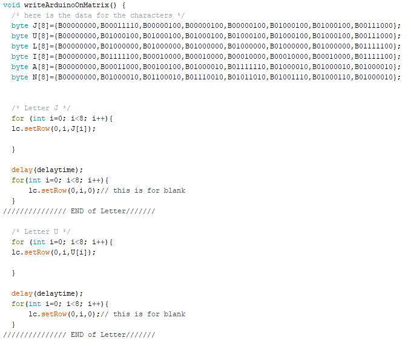
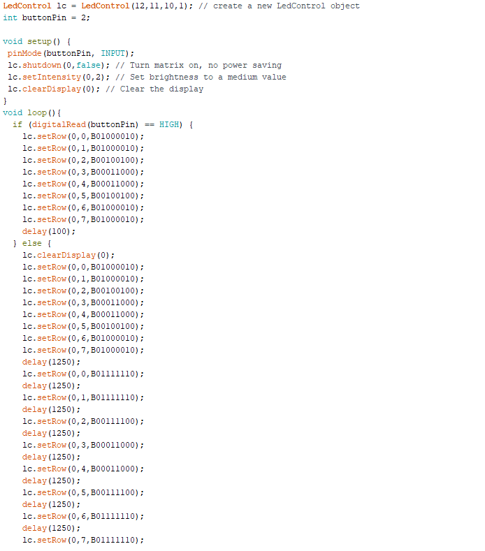
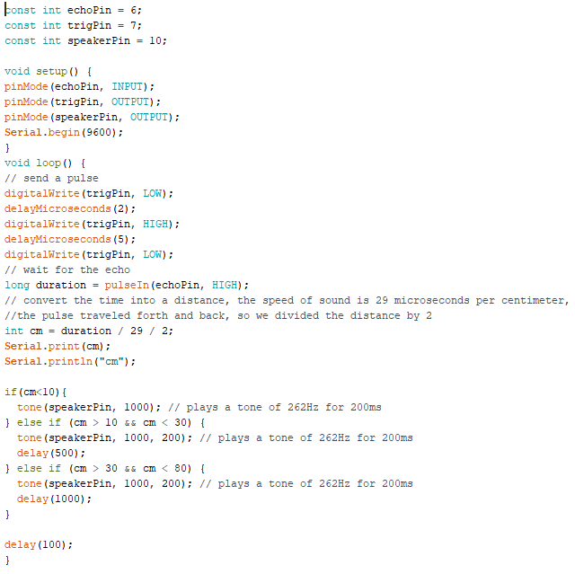

-
Apple Watch
Creator: Apple
Een van de wearables die bijna iedereen wel kent is de Apple Watch. Een Apple Watch is eigenlijk een soort van telefoon verwerkt in een horloge. Met de apple watch zijn heel veel functies mogelijk. Zo kan je bijvoorbeeld je slaap ritme bijhouden, doormiddel van je hartslag kan de apple watch zien of je een rustig slaap ritme hebt of dat je heel gestrest bent in je slaap. Je hartslag en slaapritme meten is niet het enige wat je kan, het is ook mogelijk om te bellen via dit horloge en natuurlijk kan de tijd bekijken ook niet ontbreken op een horloge.
-
Heart rate monitor
Creator: Dmitry Dziuba
Dit is een arduino project die ik gevonden heb op een site waar heel veel arduino projecten staan. Dit is een horloge die doormiddel van led lampjes aan geeft hoe hoog je hartslag is. De eerste versie van dit project was een hartslag meter om je borst, maar dat was niet praktisch, dus heeft de maker bedacht om een horloge te maken. Het limiet staat in dit geval op 192 BPM. Als deze hartslag bereikt is branden alle lampjes op het horloge. Ik vind dit een grappig project om te zien, het is heel eenvoudig, maar kan tegelijkertijd ook heel handig zijn.
-
Social distancing device
Creator: Chirag Badhe
Het laatste project dat ik gevonden heb is een pas die je om je nek kan hangen, die je waarschuwt om de 1,5 meter aan te houden tijdens deze tijden van corona. Dit project heb ik op dezelfde site als het vorige project gevonden. Ik vind dit een project die past bij de tijd waar we nu in leven. We weten allemaal dat het soms moeilijk is om 1,5 meter afstand te houden en vergissen ons nog wel is in hoelang 1,5 meter daadwerkelijk is. Deze pas waarschuwt je doormiddel van geluid en licht als je dichter dan de afstand bij iemand staat.
Wearable
Research
Tinkering
-
Arduino Letters
Als eerst ben ik aan de slag gegaan met de led matrix. Ik zag online voorbij komen dat mensen hun naam konden tonen op de matrix. Dit leek mij een leuk idee om ook te gaan maken dus ben ik dat gaan proberen. Het ging op het begin wat lastig, doordat ik erachter moest komen hoe de letters precies getoond moesten worden, maar nadat ik die eerste had ging het eigenlijk vanzelfsprekend. Hieronder een filmpje van het resultaat:
 -
Zandloper Stopwatch
Als tweede project zat ik te denken aan wat handig is als wearable. Ik dacht op een of andere manier gelijk aan de gymlessen vroeger, waar de gymleraar altijd op zijn horloge keek en moest wachten tot de tijd juist stond, zodat hij makkelijk de tijd bij kon houden. Ik heb een zandlopen gemaakt, die begint te lopen als je op de knop drukt en na 10 seconden begint hij te knipperen. Dit houdt in dat de 10 seconden voorbij zijn.
 -
Arduino memory
Als laatste demo vond ik het leuk om een spel te maken, dus ben ik opzoek gegaan naar leuke games op een arduino. Uiteindelijk ben ik gekomen op een memory game. Dit houdt in dat de lichtjes knipperen in een bepaalde volgorde en er na die reeks hetzelfde na gedaan moet worden, doormiddel van druk knopjes. Hieronder is het resultaat en een deel van de code te zien:

Hierboven is een deel van de code te zien waar de lampjes mee aangestuurd worden.
Eindopdracht
-
Hoofdband voor blinden
Als eindopdracht heb ik een hoofdband voor blinden mensen gemaakt. Ik zat te denken wat voor een wearable kan nou bijdragen aan de maatschappij. Toen kwam ik met dit idee. Het idee is als volgt: een blinde persoon doet de hoofdband op. De hoofdband is net als een achteruitrij sensor in een moderne auto, hij gaat piepen als de hoofdband dicht bij een voorwerp komt. Hoe dichter bij hoe sneller de hoofdband gaat piepen. Dit product moet voorkomen dat blinde mensen tegen voorwerpen oplopen en zichzelf daarmee kunnen verwonden. Hieronder is het resultaat te zien:

Reflectie
-
Ik wist al vanaf het bestaan van wearables, namelijk de Apple Watch. Veel mensen in mijn omgeving maken al gebruik van een wearable, ik zelf nog niet. Ik denk dat wearables iets is wat in de toekomst nog populairder gaat worden. Het is op dit moment al populair, maar heeft nog geen toegevoegde waarde bij het uitvoeren van de meeste dagelijkse activiteiten. Ik denk dat dit iets is wat ons in de toekomst een flink stuk gaat helpen.
Ik vond het arduino boord leuk om te gebruiken, de tijd vliegt voorbij als je er mee bezig bent. Uiteindelijk ben ik met mijn eindresultaat tevreden, omdat het een werken product is, waar blinden mensen nog wat aan hebben. Ik vond het overigens wel lastig om te bepalen wat ik ging maken als eindproduct, maar dan ben ik gelukkig uitgekomen.